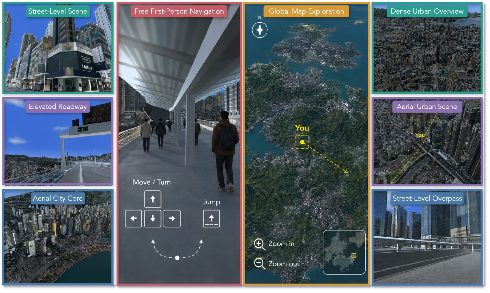
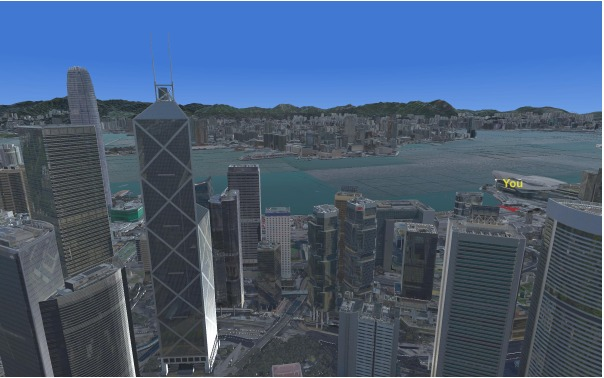
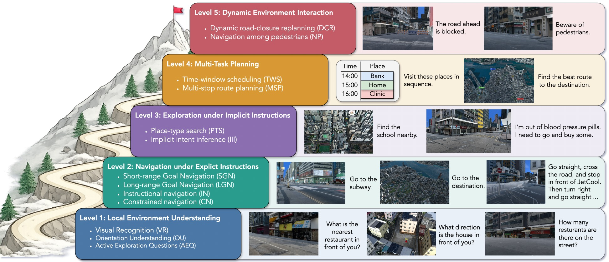
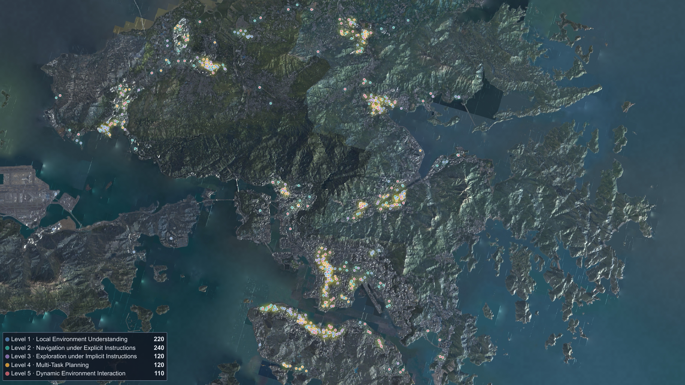
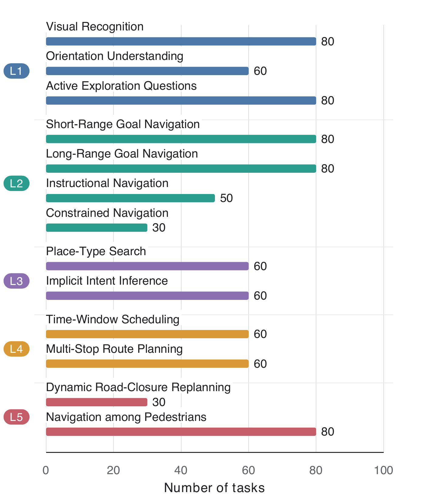

Technical Report 2026
UrbanArena: Evaluating MLLM Agents through Real-Scale Urban Exploration
A real-scale urban sandbox that turns territory-wide 3D geospatial data of Hong Kong into a continuously rendered and physically grounded environment for multimodal agents.



02
Dynamic simulation
One city, nine conditions.
Figure 2 separates the dynamic simulation into nine directly comparable views. Select a condition to inspect the original panel from the paper.

The same Hong Kong viewpoint under clear daytime illumination.
03
UrbanBench
From seeing a street to adapting within a city.
UrbanBench follows a five-level progression from local understanding to explicit navigation, implicit goal inference, multi-task planning, and interaction with environmental change.

The benchmark exposes only task instructions, first-person observations, physical controls, and map interaction. It does not provide hidden coordinates, remaining distance, or privileged simulator state.
04
Benchmark coverage
Coverage and composition.
UrbanBench spans geographically diverse regions of Hong Kong while distributing thirteen task types across five capability levels. These views summarize where tasks occur and how the benchmark is composed.


Technical report · 2026
UrbanArena
Evaluating MLLM Agents through Real-Scale Urban Exploration
- Shanghai Jiao Tong University
- National University of Singapore
- Meituan
- The Chinese University of Hong Kong
- Shanghai University
- University of Oxford
@article{ju2026urbanarena,
title = {UrbanArena: Evaluating MLLM Agents through
Real-Scale Urban Exploration},
author = {Ju, Tianjie and Sun, Yueqing and Wu, Zheng and
Cui, Yuhan and Li, Bobo and Cheng, Pengzhou and
Zhao, Haodong and Ma, Xinbei and Gu, Qi and
Fei, Hao and Zhang, Zhuosheng},
journal = {Technical Report},
year = {2026}
}